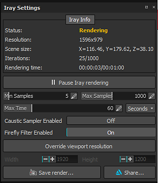
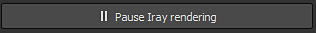

The Iray settings control the rendering of the IRay viewport, how long it will run and the quality of it.
The top section of the window display the status of Iray alongside other information.
| Setting | Description |
|---|---|
| Status | The status indicate how Iray is working :
|
| Resolution | The resolution of the Iray image (by default dependent of the viewport size). |
| Scene Size | The bounding box size of the scene/3D Mesh. There is no unit, but it is assumed to be in centimeters. |
| Iterations | The number of computation passes done by Iray over the maximum defined in the settings. |
| Rendering time | Time elapsed doing a render over the maximum time defined in the settings. |
The number of iterations will define the final quality of the render : more iterations = better quality.
However iterations can take some time, that why it is possible to define a maximum time. An iteration is defined by the number of samples.
As soon as a setting has been modifier, Iray will start computing the rendering.
It is possible to pause Iray to avoid this behavior with the dedicated button :

| Setting | Description |
|---|---|
| Min Sample | Minimum amount of samples performed by pixels |
| Max Sample | Maximum amount of samples performed by pixels |
| Max Time | The maximum amount of time allowed for Iray to do its computation. The dropdown on the right allow to set the unit (seconds, minutes, or hours). |
| Caustic Sampler Enabled | This option allow to compute more advanced lighting reflections (caustics). |
| Firefly Filter Enabled | This option allow to get rid of isolated and very bright pixels that can happen sometimes. |
| Override viewport resolution | This setting allow to define a custom size for the rendering, instead of using the current viewport size. The Width and Height setting below allow to define it in amount of pixels. |
| Save Render | Action to export the current render (even if unfinished) to a file. |
| Share | Allow to share/export the current render to ArtStation. |